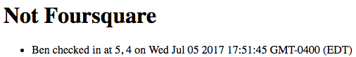
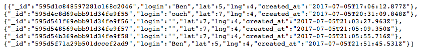
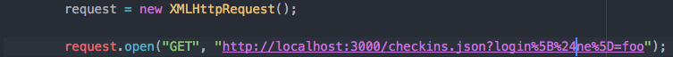

The product is a web app that stores the locations of users and displays them on webpages. I have been hired to find any possible security issues with the application, which uses Node.js, Express, and MongoDB.
After the burp suite provided too many installation difficulties to prove useful, I scanned the source code myself and identified areas of insecurity. I then verified these concerns using curl to manipulate URLs.
I have found a number of potential areas of attack in the application. The most severe has to do with cross-site-scripting (XSS), which enables a user to insert information or even dangerous code into the database. This is a vulernability due to the handling of input to the database. Another issue is the ability to override login information, allowing a client to access information that they do not have permissions for. This poses a security risk for the clients of the service. Also, the site is set up such that any other site can request data from the server, potentially damaging it or accessing its data.
All observations were made by running the web application locally.
The first issue found was the ability to insert data to the system using
a cUrl command in the terminal, which is an XSS attack. This is due to the application's
dependence on user input for "login", "lat", and "lng". I found this
vulernability by searching for fields in server-vuln.js that were filled
by user input. The /sendLocation
route asks for and uses this input, which can be specified using cUrl. After submitting
"curl --data "login=Ben&lat=5&lng=4" http://localhost:3000/sendLocation"
into the terminal shell, a new entry is added to the server, with login Ben,
lat 5, and lng 4. The result, when running the main page of the app,
lists this false entry:

This issue could be extremely severe, depending on what is added to the
database. If it is malicious code, the result could be disastrous for
the site and/or the clients. This issue could be resolved by not displaying
user-inputted data in HTML, which would prevent potentially dangerous
code from running.
The second issue has to do with access to information within the database,
which can be breached with a NoSQL injection. Since the route /checkins.json
uses a login as a key, a clever use of the NoSQL injection "$ne" can be added to reveal all of
the data in the server. Going to the /checkins.json route normally opens up
a set of empty brackets, but if "?login[$ne]="definitely_not_a_name_in_the_database",
the site reveals all entries that do not correspond with the login "definitely_no_a_name_in_the_database":

This is a moderate issue, as although it does compromise information about
the users of the application, it does not pose an immediate threat to the
application itself. Since this database does not contain vital information
about its users, the result of an attack in this way will likely be harmless.
That being said, this can be avoided by not using the exact MongoDB syntax,
encoding the function so that the attacker cannot find an entryway into
the application.
The third issue has to do with CORS and the Access-Control-Allow-Origin: *
permissions given for the server. This means that any website can make an
XHR request to the server. Since all other webpages are authorized to
access this server, another site can access the data in the server with a
simple XMLHttpRequest:

This is a serious issue, as other sites are able to make requests to your
server using client-side javascript. This could compromise information
about the clients to further attack, as well as make your server vulnerable
as well. The easiest way to solve this
problem is to allow url(s) that are affiliated with this program to access
any CORS-necessary items.